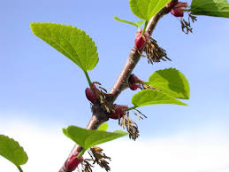

Cercidiphyllaceae
Katsura Family
Cercidiphyllaceae is a small family containing only one genus, Cercidiphyllum, commonly known as the Katsura tree. Native to East Asia (China and Japan), these deciduous trees belong to the order Saxifragales. They are recognized by their simple, heart-shaped leaves (resembling Redbud, Cercis) borne on distinctive dimorphic shoots (long shoots and short spur shoots), small, unisexual, apetalous flowers that appear before the leaves, and fruit consisting of clusters of small, pod-like follicles. Katsura trees are widely prized as ornamentals and are known for the sweet, caramel-like scent produced by their fallen leaves in autumn.
Overview
Cercidiphyllaceae is a monogeneric family (containing only the genus Cercidiphyllum) placed within the diverse order Saxifragales, near the base of the core eudicot lineage. The family includes only one or two species (depending on taxonomic interpretation) of deciduous trees native to forests in China and Japan. However, the Katsura tree (Cercidiphyllum japonicum) is widely cultivated as an ornamental tree in temperate regions worldwide for its graceful habit, attractive heart-shaped leaves, and vibrant fall color.
Katsura trees are readily identifiable by several unique characteristics. They exhibit shoot dimorphism, producing both long shoots for extension growth (with opposite leaves) and short spur shoots on older wood where leaves appear clustered or alternate, and flowers/fruits are borne. The simple leaves are broadly ovate to heart-shaped (cordate), resembling those of the unrelated Redbud (Cercis), hence the generic name. In early spring, before the leaves emerge, small, inconspicuous, unisexual flowers appear on the spur shoots; lacking petals, they are likely wind-pollinated. Female flowers develop into clusters of small follicles, each containing winged seeds.
A particularly well-known characteristic is the distinctive sweet fragrance, often compared to caramel, burnt sugar, or cotton candy, emitted by the senescing leaves in autumn. This scent is attributed to the production of maltol. While native to East Asia, Katsura trees are sometimes planted in parks, gardens, and campuses in areas like Oklahoma.
Quick Facts
- Scientific Name: Cercidiphyllaceae Engl.
- Common Name: Katsura family
- Number of Genera: 1 (Cercidiphyllum)
- Number of Species: 1 or 2 (C. japonicum, C. magnificum)
- Distribution: Native to China and Japan; widely cultivated ornamentally in temperate zones.
- Evolutionary Group: Eudicots - Core Eudicots - Order Saxifragales
Key Characteristics
Growth Form and Habit
Deciduous trees, often developing multiple trunks from the base, reaching heights of 10-30 meters (occasionally taller in native habitats). Bark is often shaggy or furrowed on older trees.
Shoots
Exhibit distinct shoot dimorphism: long shoots are produced for vegetative extension and bear leaves arranged oppositely; short spur shoots develop on older wood, grow very slowly, bear leaves that appear clustered or alternate, and produce the flowers and fruits.
Leaves
Leaves are simple, with petioles. Leaf blades are broadly ovate to nearly circular, often heart-shaped (cordate) at the base, resembling leaves of Cercis (Redbud). Leaf margins are crenate or shallowly serrate. Venation is palmate. Leaf arrangement depends on shoot type: opposite on long shoots, appearing alternate or fascicled (clustered) on spur shoots. Stipules are present, relatively large, fused around the stem above the petiole base, enclosing the bud, and deciduous (falling early), leaving a scar. Leaves turn shades of yellow, pink, orange, or apricot in autumn and famously release a sweet caramel or burnt sugar scent (due to maltol) as they decompose.
Inflorescence
Flowers appear before the leaves (precocious) in early spring, borne solitary or in small clusters (fascicles) on the short spur shoots from buds formed the previous year.
Flowers
Flowers are small, inconspicuous, unisexual (plants are dioecious, with separate male and female trees), and apetalous (lacking petals). They are likely primarily wind-pollinated (anemophilous).
- Perianth: Essentially absent, though sometimes interpreted as having 4 small, bract-like structures at the base.
- Male Flowers (Staminate): Consist of a dense fascicle of numerous (8-13 or more) stamens. Filaments are long and slender; anthers are linear, reddish, and dehisce longitudinally. No sterile pistil (pistillode).
- Female Flowers (Pistillate): Consist usually of a single pistil representing a single carpel (monocarpous). The ovary is superior, somewhat elongated and stalked (stipitate), containing numerous (around 20-30) ovules arranged in two rows along the adaxial suture (marginal placentation). The style is short, bearing an elongated, reddish, receptive stigma along one side.
Fruits and Seeds
The fruit develops from the female flower clusters on spur shoots and consists of a group of 2-6 (typically) small, dehiscent, pod-like structures known as follicles (each 1-2 cm long). Each follicle develops from a single carpel/pistil, is somewhat curved or crescent-shaped, and splits open along one suture (the adaxial side) to release seeds. Seeds are numerous, small, flattened, and winged primarily at one end, adapted for wind dispersal. Seeds contain oily endosperm.
Chemical Characteristics
Contain tannins and possibly ellagic acid. Most noted for the production of the volatile compound maltol during leaf senescence in autumn, which is responsible for the characteristic sweet fragrance.
Field Identification
Cercidiphyllaceae (Cercidiphyllum) is identifiable by its unique combination of tree habit, leaf shape and arrangement on dimorphic shoots, early apetalous flowers, and follicle fruits, especially when combined with its characteristic autumn scent.
Primary Identification Features
- Deciduous Tree Habit: Often multi-trunked.
- Cercis-like Leaves: Simple, heart-shaped (cordate) leaves with crenate margins.
- Shoot Dimorphism: Presence of both long shoots (opposite leaves) and short spur shoots (clustered leaves).
- Flowers Precocious, Apetalous: Small, unisexual flowers lacking petals appear on spur shoots before leaves in early spring.
- Fruit a Cluster of Follicles: Small, pod-like follicles grouped on spur shoots.
- Sweet Autumn Leaf Scent: Fallen leaves emit a distinctive caramel/burnt sugar smell.
Secondary Identification Features
- Opposite leaf arrangement on current year's extension growth.
- Presence of distinct short spur shoots on older branches.
- Stipule scars encircling the twig at nodes.
- Dioecious reproduction (separate male and female trees).
- Native to East Asia, but check for ornamental plantings (possible in OK).
Seasonal Identification Tips (relevant to potential cultivation in OK)
- Spring: Look for small, reddish (male stamens or female stigmas) apetalous flowers on spur shoots before leaves emerge. New long shoots show opposite leaf buds/leaves.
- Summer: Full foliage visible; observe heart-shaped leaves and the contrast between opposite leaves on long shoots and clustered leaves on spurs.
- Autumn: Leaves turn attractive shades of yellow, apricot, or pink. Fallen leaves release the characteristic sweet scent, especially on damp days. Developing follicle clusters may be visible.
- Winter: Deciduous. Look for the branching structure, often multi-stemmed habit, presence of spur shoots on older wood, and possibly persistent dried follicle clusters. Bark is shaggy on mature trees.
Common Confusion Points
- Cercis (Redbud, Fabaceae): Similar heart-shaped leaves, but leaves are strictly alternate on all shoots, lacks spur shoots, flowers are bright pink, pea-like (papilionaceous) and appear before or with leaves, fruit is a flattened legume pod.
- Tilia (Linden/Basswood, Malvaceae): Heart-shaped leaves, but strictly alternate, often asymmetrical at base, flowers are perfect, have petals and sepals, borne in drooping cymes with a characteristic leafy bract, fruit is a small nutlet.
- Catalpa (Catalpa, Bignoniaceae): Very large heart-shaped leaves, but arrangement is opposite or whorled, flowers are large, showy, zygomorphic with petals, fruit is a long, bean-like capsule.
- Other trees with opposite leaves (e.g., Maples - Acer) have palmately lobed leaves (usually) and samara fruits.
Field Guide Quick Reference
Look For:
- Deciduous Tree (often multi-trunked)
- Simple, heart-shaped leaves
- Shoot Dimorphism (long/spur shoots)
- Leaves opposite on long shoots
- Leaves clustered on spur shoots
- Flowers apetalous, before leaves
- Fruit a cluster of follicles
- Sweet autumn leaf scent
Key Variations:
- (Monogeneric - variations minor)
- Fall color intensity (yellow to apricot)
- Habit (single vs multiple trunks)
- C. magnificum (if separate) smaller, more shrubby
Notable Examples
The family Cercidiphyllaceae contains only the genus Cercidiphyllum, widely known as the Katsura tree.

Cercidiphyllum japonicum
Katsura Tree
The primary species, native to China and Japan. A graceful deciduous tree prized ornamentally for its form, delicate heart-shaped leaves that emerge reddish-purple, turn blue-green, then display yellow to apricot fall color. Known for its dimorphic shoots and the characteristic sweet smell of fallen leaves. Widely planted in temperate climates worldwide.

Cercidiphyllum Leaves & Shoots
Leaf and Shoot Dimorphism
Katsura leaves resemble Redbud (Cercis). A key feature is shoot dimorphism: vigorous long shoots have opposite leaves, while slow-growing short spur shoots bear leaves that appear clustered or alternate. Flowers and fruits are produced only on the spur shoots.

Cercidiphyllum Fruit
Follicle Cluster
The fruit consists of a cluster of 2-6 small (1-2 cm), pod-like follicles borne on spur shoots. Each follicle develops from a single carpel and splits open along one side to release numerous small, flattened, winged seeds, adapted for wind dispersal.

Cercidiphyllum magnificum
Large-leaf Katsura
Sometimes treated as a distinct species, endemic to central Honshu, Japan, but often considered a variety or subspecies of C. japonicum. It typically differs in being smaller, sometimes more shrub-like, potentially having slightly larger leaves, and fruit follicles that may be more spreading. Ornamental characteristics are similar.
Phylogeny and Classification
Cercidiphyllaceae is placed in the large and diverse order Saxifragales, which occupies a position near the base of the core eudicot radiation (distinct from Rosids and Asterids). The family contains only the genus Cercidiphyllum and represents a morphologically distinct and isolated lineage within the order.
Molecular phylogenetic studies consistently place Cercidiphyllaceae as one of the earliest diverging lineages within Saxifragales, possibly sister to all other families in the order, or branching off very near the base. This isolated position reflects its unique combination of characteristics (e.g., deciduous tree habit, simple opposite leaves on long shoots, apetalous dioecious flowers, follicles) which differ significantly from most other families in Saxifragales (like Saxifragaceae, Crassulaceae, Hamamelidaceae, Paeoniaceae). It is considered somewhat of a "living fossil", retaining features potentially indicative of early forms within the order.
Position in Plant Phylogeny
- Kingdom: Plantae
- Clade: Angiosperms (Flowering plants)
- Clade: Eudicots
- Clade: Core Eudicots
- Order: Saxifragales
- Family: Cercidiphyllaceae
- (Phylogenetic Position: Basal lineage within Saxifragales)
Evolutionary Significance
Cercidiphyllaceae offers valuable evolutionary insights:
- Basal Saxifragales Lineage: Its position as an early-diverging branch helps anchor phylogenetic studies of the entire Saxifragales order and understand ancestral traits.
- "Living Fossil" Candidate: Represents an ancient lineage with a long history and few extant species, potentially retaining ancestral characteristics.
- Evolution of Shoot Dimorphism: Provides an example of specialized shoot development (long vs. spur shoots) for optimizing growth and reproduction.
- Floral Reduction: Shows evolutionary reduction to apetalous, unisexual, wind-pollinated flowers from likely more complex ancestral forms within Saxifragales.
- Biogeography: Its restricted East Asian native distribution contrasts with the wider distributions of many other Saxifragales families, providing clues about past climate and geological history.